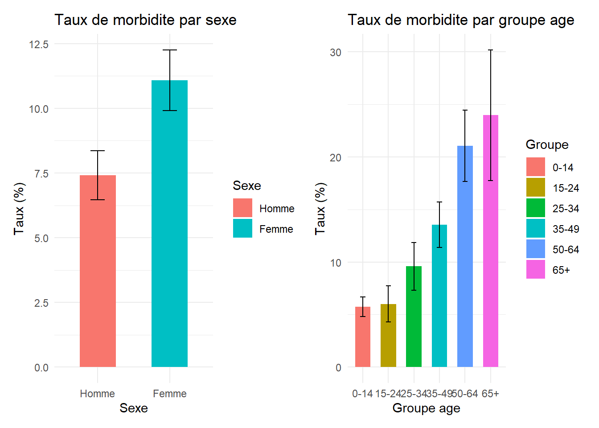
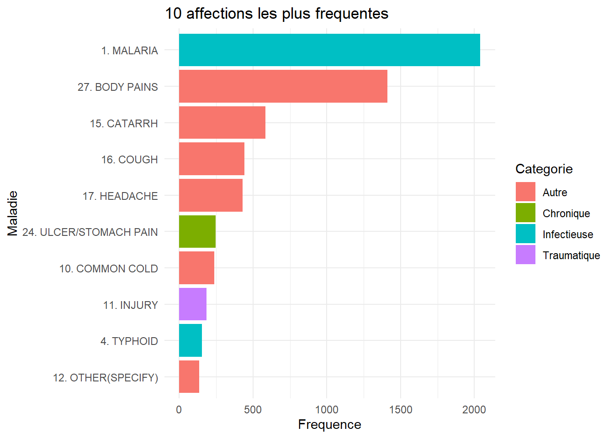
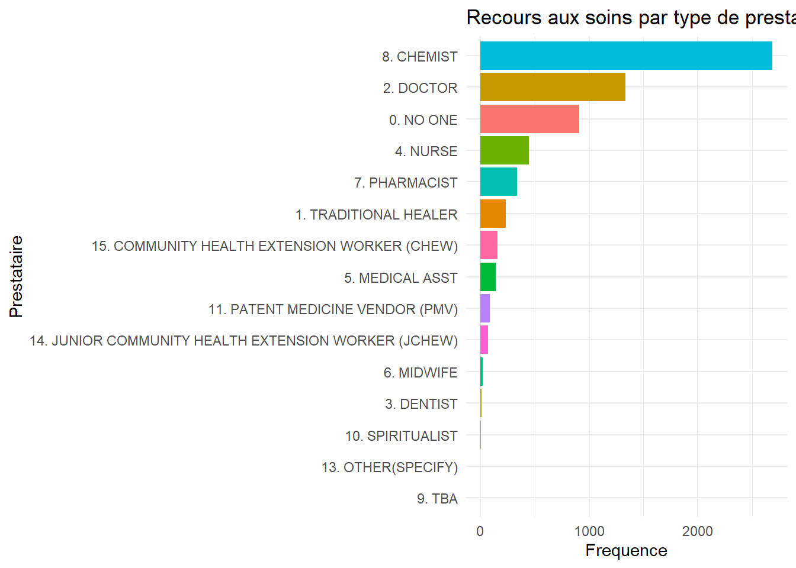
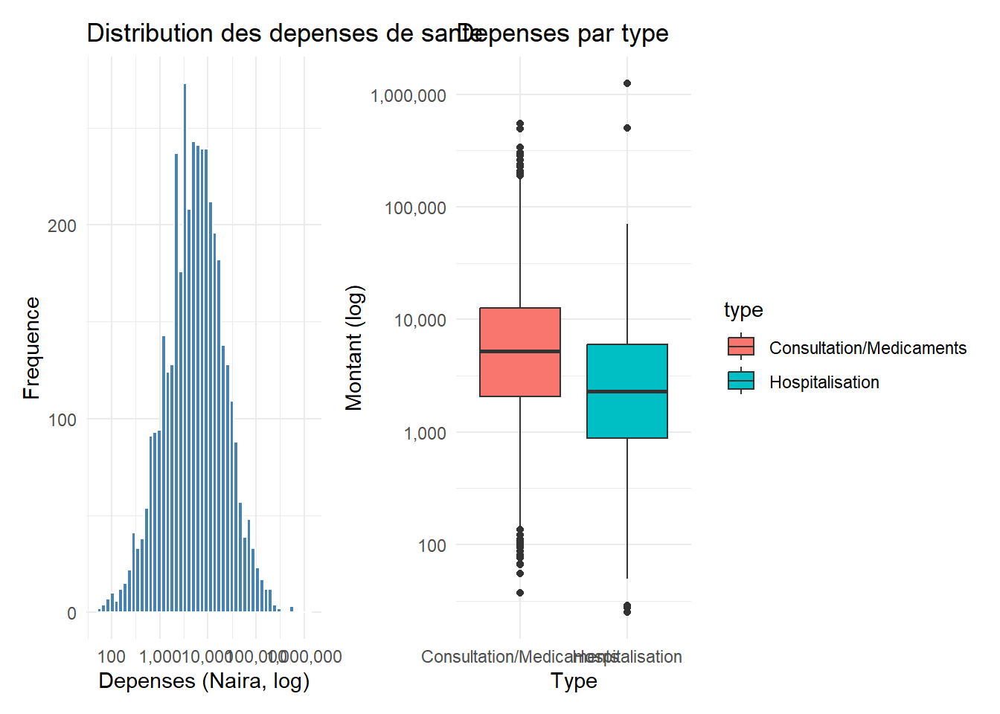
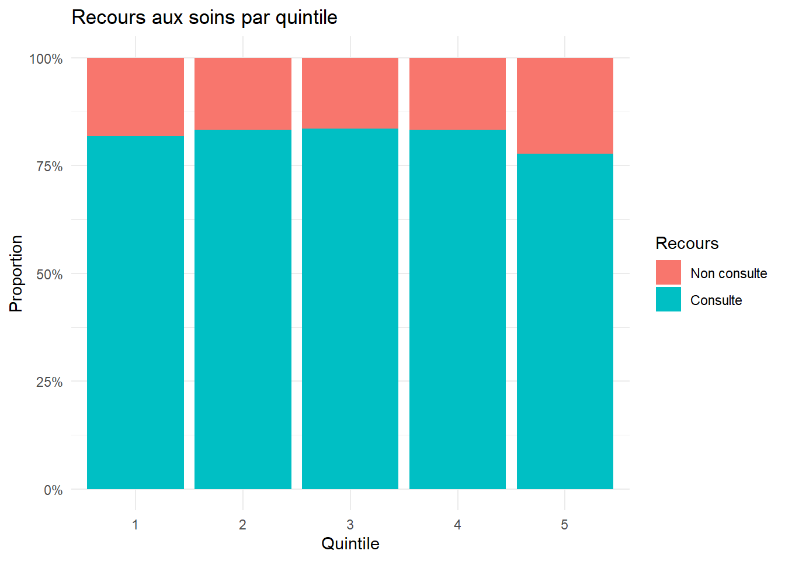
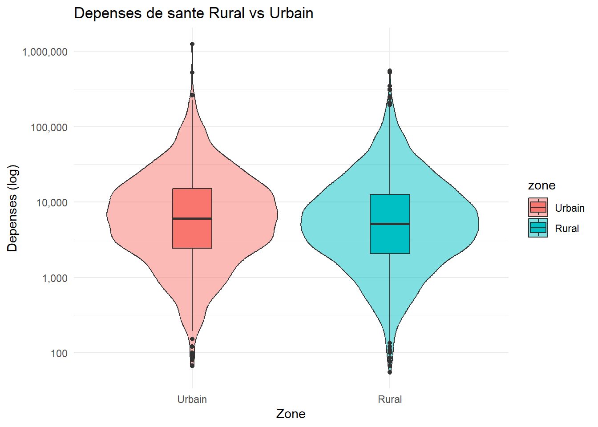

| Characteristic | Overall N = 5,7031 |
Homme N = 2,9591 |
Femme N = 2,7441 |
|---|---|---|---|
| Groupe age | |||
| 0-14 | 2,419 (44%) | 1,395 (49%) | 1,024 (39%) |
| 15-24 | 741 (13%) | 398 (14%) | 343 (13%) |
| 25-34 | 648 (12%) | 233 (8.2%) | 415 (16%) |
| 35-49 | 954 (17%) | 414 (15%) | 540 (20%) |
| 50-64 | 551 (10%) | 292 (10%) | 259 (9.8%) |
| 65+ | 181 (3.3%) | 113 (4.0%) | 68 (2.6%) |
| Unknown | 209 | 114 | 95 |
| Maladie/Blessure | |||
| Non | 4,359 (91%) | 2,337 (93%) | 2,022 (89%) |
| Oui | 439 (9.1%) | 187 (7.4%) | 252 (11%) |
| Unknown | 905 | 435 | 470 |
| 1 n (%) | |||
Analyse 3 - Acces aux soins et depenses de sante
Nigeria GHS Panel Wave 4 (2018)
1 Introduction
Ce rapport analyse les episodes de maladie, les types de soins consultes et les couts de sante supportes par les menages nigerians a partir du Nigeria General Household Survey (GHS) Panel Wave 4 (2018). Les donnees couvrent 26 556 individus issus de menages urbains et ruraux.
2 Methodologie
2.1 Sources de donnees
Le Nigeria GHS Panel est une enquete longitudinale conduite par le National Bureau of Statistics (NBS) du Nigeria en partenariat avec la Banque Mondiale (LSMS-ISA). La Wave 4 couvre la periode 2018-2019.
2.2 Variables analysees
2.3 Methodes statistiques
Les analyses suivantes ont ete realisees : Taux de morbidite avec intervalles de confiance a 95%, test du Chi-deux et V de Cramer pour les associations, test de Wilcoxon pour la comparaison de medianes, et visualisations : barplots, histogrammes, violin plots.
3 Question 13 - Taux de morbidite
3.1 Resultats

3.2 Interpretation
Le taux de morbidite global est de 9.31%. Les femmes (11.1%) sont plus touchees que les hommes (7.4%). Le taux augmente avec l’age, passant de 5.7% chez les 0-14 ans a 24% chez les 65 ans et plus.
4 Question 14 - Types de maladies declarees
4.1 Resultats

4.2 Interpretation
Le paludisme est la maladie la plus frequente avec 2 039 cas (41.7%). Les douleurs corporelles arrivent en 2eme position (1 411 cas). Les maladies infectieuses dominent le profil epidemiologique du Nigeria.
5 Question 15 - Recours aux soins
5.1 Resultats

5.2 Interpretation
Le chimiste est le prestataire le plus consulte (41.7%), suivi du medecin (20.7%). 14.1% des individus malades n’ont consulte personne, soulignant les barrieres d’acces aux soins.
6 Question 16 - Distribution des depenses de sante
6.1 Resultats

6.2 Statistiques par decile
| decile | Min | Mediane | Max | Moyenne |
|---|---|---|---|---|
| 1 | 0.0000 | 0.0000 | 0.0000 | 0.0 |
| 2 | 0.0000 | 0.0000 | 304.1667 | 37.1 |
| 3 | 304.1667 | 735.8333 | 1216.6667 | 746.6 |
| 4 | 1216.6667 | 1825.0000 | 2433.3333 | 1787.4 |
| 5 | 2433.3333 | 3041.6667 | 3650.0001 | 3011.5 |
| 6 | 3650.0001 | 4623.3332 | 5779.1666 | 4639.0 |
| 7 | 5779.1669 | 7097.2220 | 8533.3335 | 7094.3 |
| 8 | 8550.0000 | 10950.0000 | 13909.1668 | 11041.9 |
| 9 | 13991.6665 | 18250.0000 | 26158.3339 | 18883.2 |
| 10 | 26158.3340 | 43191.6680 | 1250000.0000 | 66449.6 |
6.3 Interpretation
Les depenses de sante presentent une distribution fortement asymetrique. La mediane est de 3 650 Naira avec 494 valeurs aberrantes. Les depenses d’hospitalisation sont plus dispersees que les consultations.
7 Question 17 - Recours aux soins x Quintile
7.1 Resultats
| 1 | 2 | 3 | 4 | 5 | |
|---|---|---|---|---|---|
| Non consulte | 181 | 166 | 163 | 167 | 221 |
| Consulte | 815 | 829 | 832 | 828 | 774 |
Chi-deux: 15.865 p-value: 0.0032 V de Cramer: 0.0565 
7.2 Interpretation
Le test du Chi-deux est significatif (p = 0.003), indiquant une association entre le recours aux soins et le quintile de consommation. Le V de Cramer (0.056) revele une association faible. Les menages les plus pauvres ont legerement moins recours aux soins.
8 Question 18 - Depenses de sante Rural vs Urbain
8.1 Resultats

Wilcoxon W: 2681342 p-value: 0.7937 8.2 Interpretation
Le test de Wilcoxon (p = 0.794) ne montre pas de difference significative des depenses de sante entre zones rurales et urbaines. Le violin plot confirme des distributions similaires dans les deux zones.
9 Conclusion
Cette analyse des donnees de sante du Nigeria GHS Panel Wave 4 revele :
- Un taux de morbidite global de 9.31%, plus eleve chez les femmes et les personnes agees
- Le paludisme comme principale affection (41.7% des cas)
- Le chimiste comme premier recours aux soins (41.7%)
- 14.1% des malades ne consultent personne
- Un lien significatif mais faible entre richesse et recours aux soins
- Pas de difference significative des depenses entre zones rurales et urbaines
Ces resultats soulignent la necessite de renforcer l’acces aux soins formels et de lutter contre le paludisme au Nigeria.